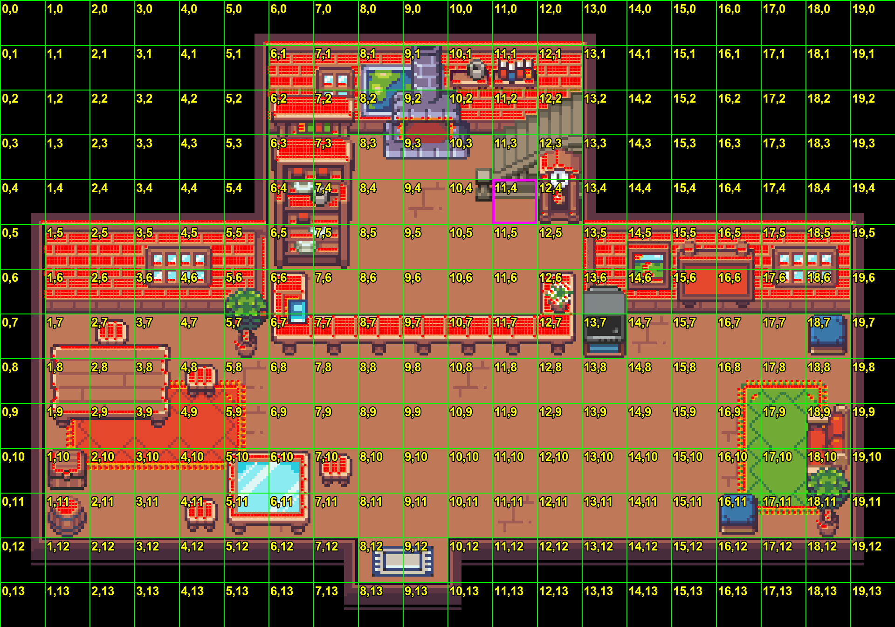

■ Chấm đỏ = pixel lửa trong art gốc (server tự scan). ■ Ô tím (11,4) = anchor test mik đoán (đang sai).

Bạn rep giúp: miệng lò (chỗ lửa bốc lên) là ô nào? Vd (11,2), hoặc cả dải (9,2)-(12,2) nếu lò dài. Mik dời anchor tới đúng ô là lửa khớp art.